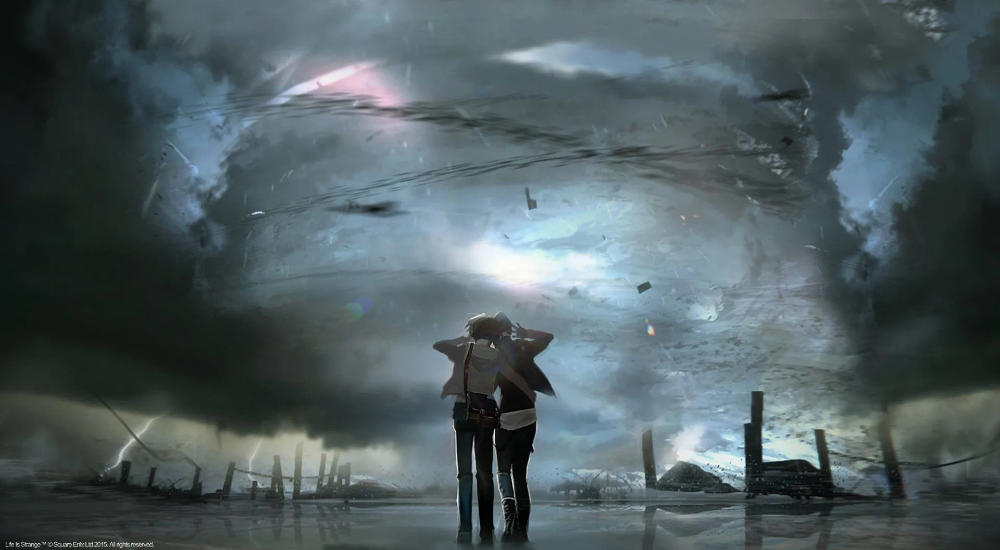
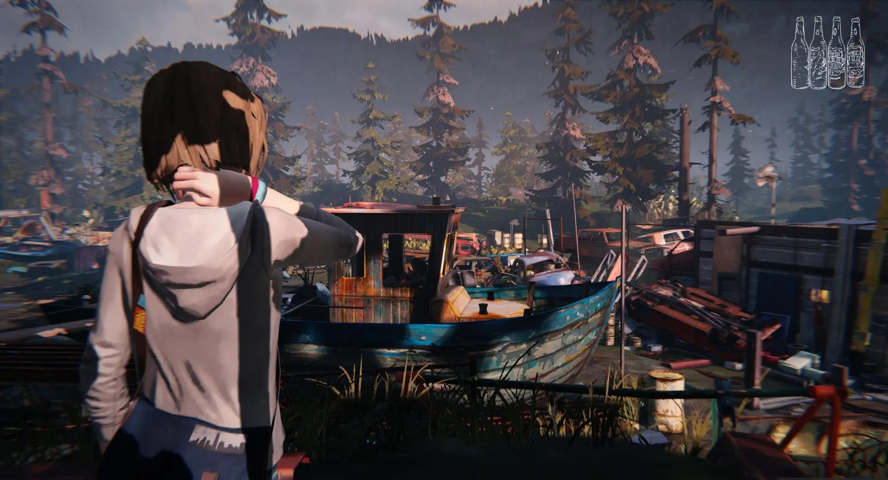
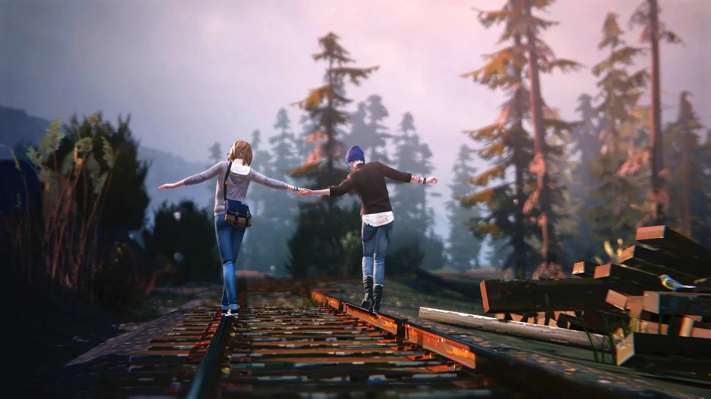
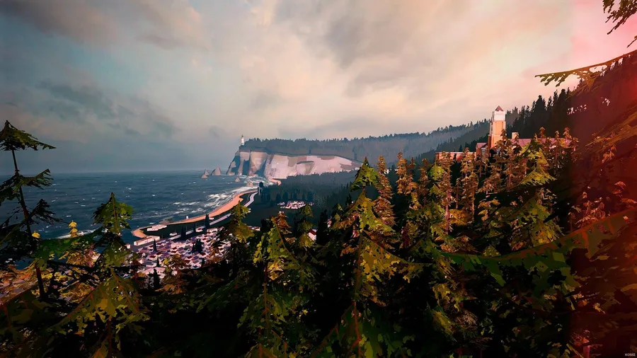
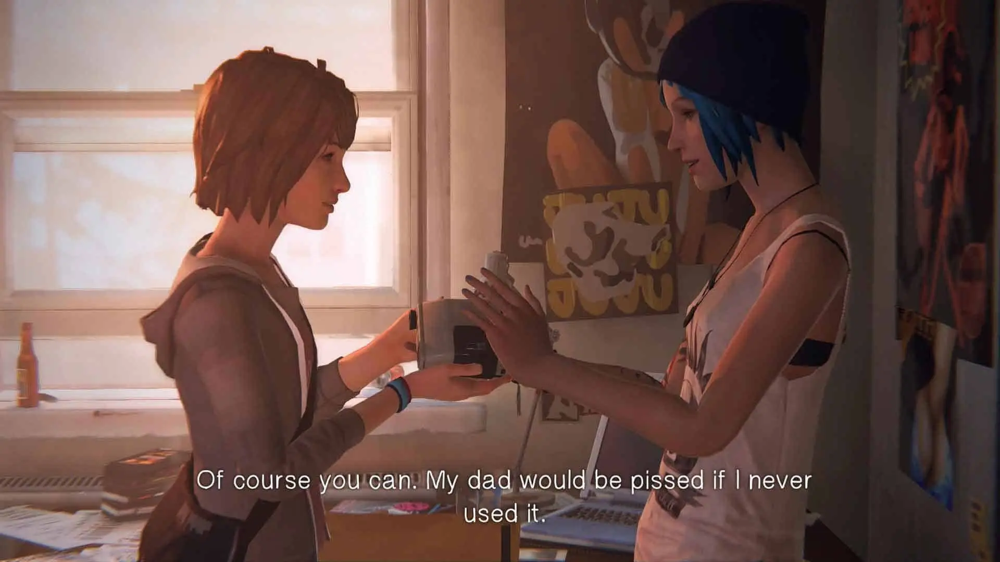
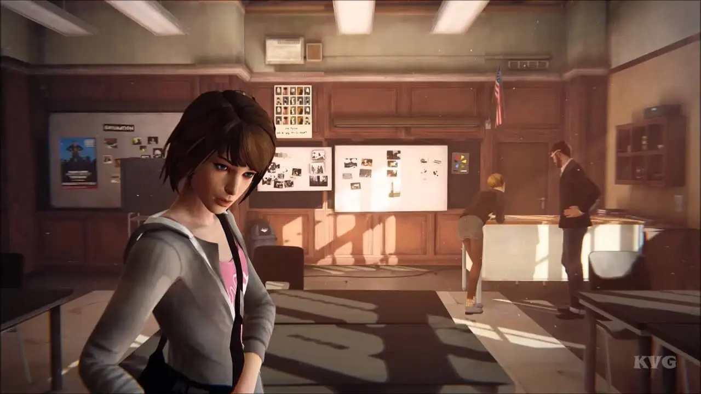
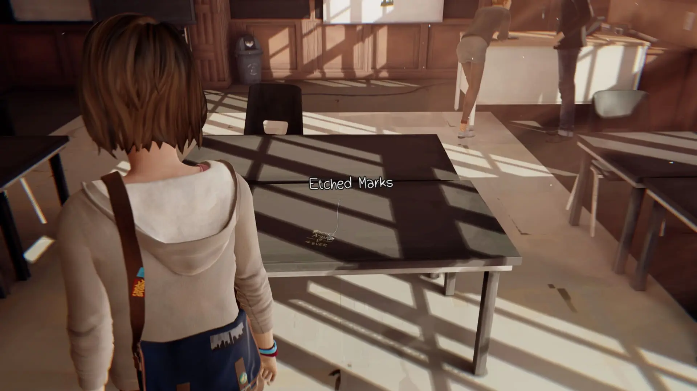
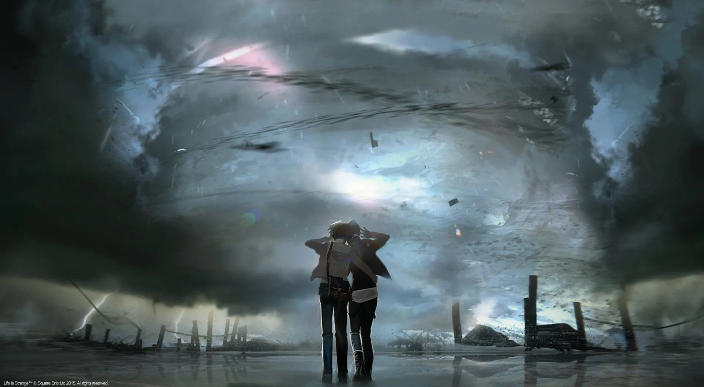
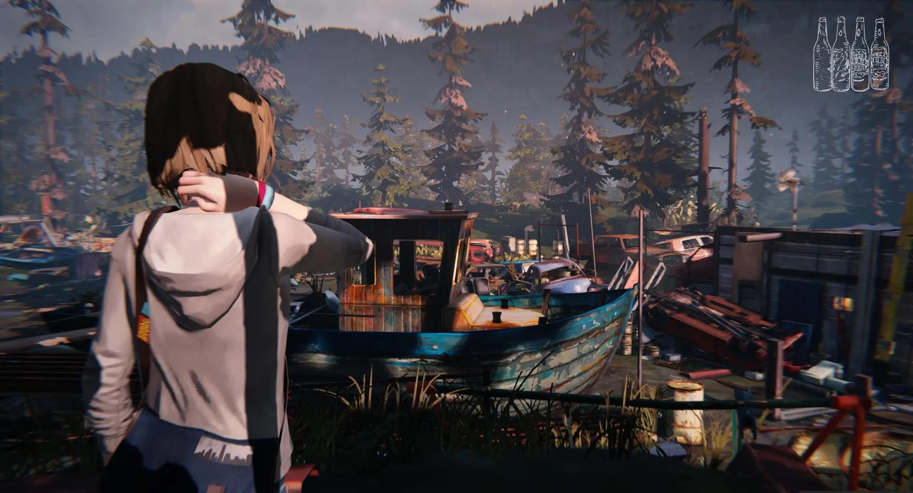
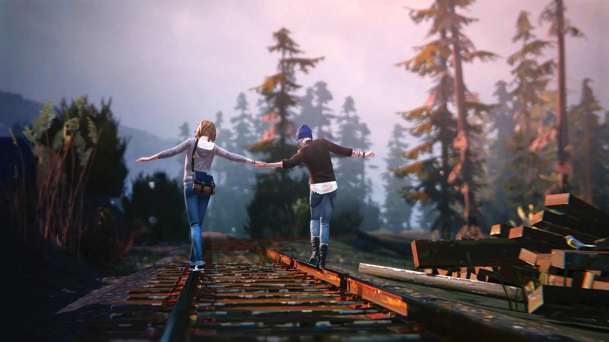
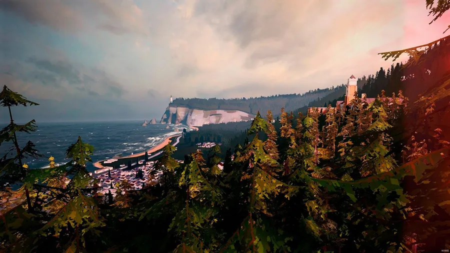
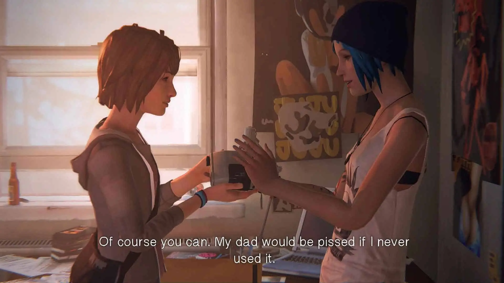
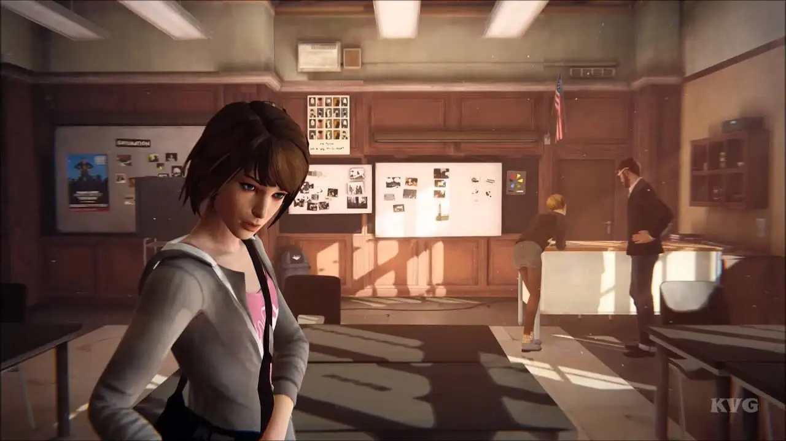
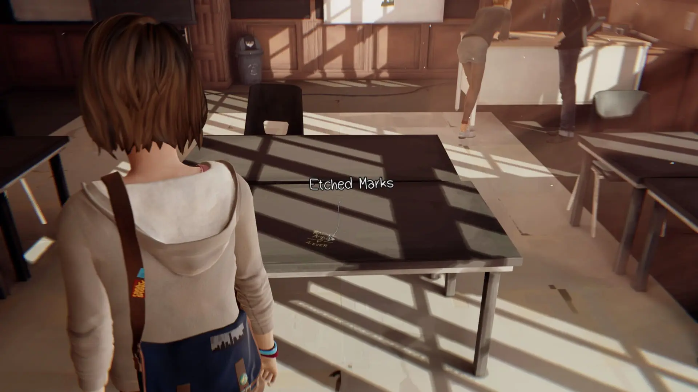


Devil may Cry (2001)
Devil May Cry es un videojuego de acción y aventura ambientado en tiempos modernos en la ficticia Isla Mallet, la historia se centra en Dante, un cazador de demonios que utiliza su negocio para llevar a cabo una vendetta de por vida contra todos los demonios. Se encuentra con una mujer llamada Trish, quien lo lleva en un viaje para derrotar al señor demonio Mundus, quien es responsable de las muertes del hermano y la madre de Dante.